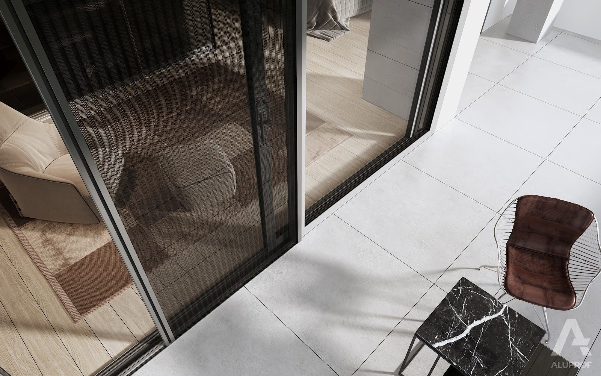
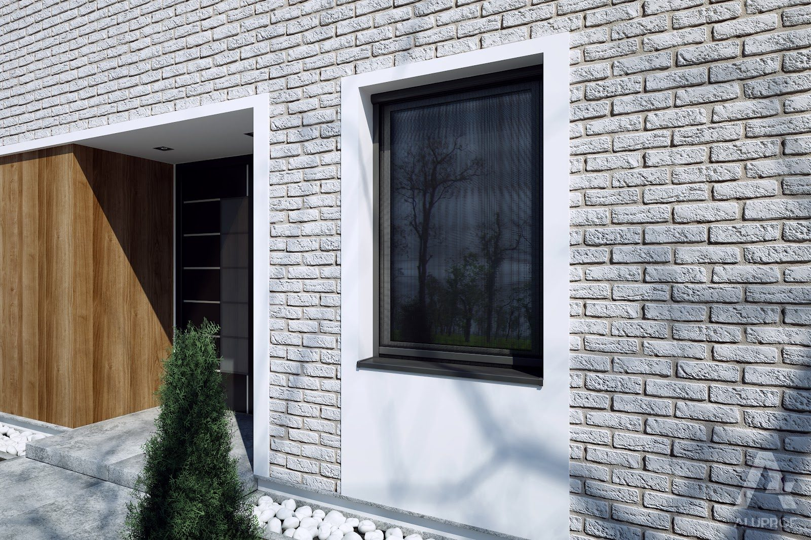
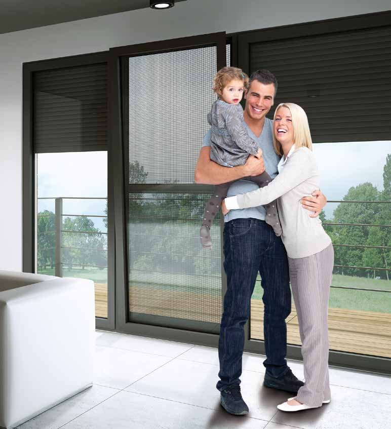
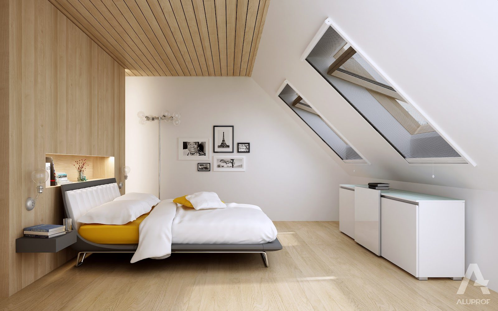
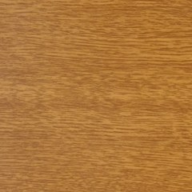
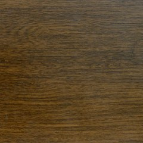
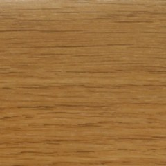
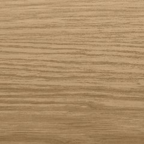

Moskitiery naszej produkcji — na wymiar do każdego typu okna i drzwi. Ciesz się świeżym powietrzem bez nieproszonych gości.




Siatka złożona w harmonijkę rozkłada się płynnie w otworze — wystarczy przesunąć listwę z uchwytem. Moskitierę można zatrzymać w dowolnym miejscu, a po złożeniu zajmuje tylko kilka centymetrów. Niski próg nie przeszkadza w przechodzeniu na taras.




| Typ | Zastosowanie | Cechy |
|---|---|---|
| Ramkowa | okna rozwierne i uchylne | montaż bez wiercenia, demontaż na zimę |
| Drzwiowa | balkon, taras | zawiasy, domykanie magnetyczne |
| Rolowana | okna rozwierne, okna dachowe | kaseta, możliwość schowania siatki |
| Plisowana | HST, okno z ruchomym słupkiem, drzwi zewnętrzne | niski próg, po złożeniu zajmuje niewiele miejsca |
Siatka o drobnym oczku — bariera także dla małych owadów
Swobodny przepływ powietrza i światła
Moskitiery produkujemy na wymiar w naszej pracowni
Moskitiery można zamontować na większości okien, jednak wybór odpowiedniego rozwiązania zależy od konstrukcji okna, dostępnego miejsca oraz rodzaju zastosowanych osłon zewnętrznych. Przed montażem warto sprawdzić, jaki typ moskitiery będzie najlepiej dopasowany do danej stolarki.
Moskitiery najlepiej czyścić regularnie miękką szczotką lub odkurzaczem z delikatną końcówką, aby usunąć kurz i zabrudzenia. W razie potrzeby siatkę i profile można przetrzeć miękką ściereczką zwilżoną wodą z łagodnym detergentem. Należy unikać silnych środków chemicznych i szorstkich gąbek, które mogłyby uszkodzić siatkę lub powierzchnię profili. Regularna pielęgnacja pozwala zachować estetyczny wygląd i funkcjonalność moskitiery przez długi czas.
Nie wszystkie moskitiery wymagają demontażu na zimę. Moskitiery ramkowe warto zdjąć na okres jesienno-zimowy, aby ograniczyć ich narażenie na trudne warunki atmosferyczne. Moskitiery rolowane i plisowane zazwyczaj mogą pozostać zamontowane przez cały rok, zgodnie z zaleceniami producenta.
Moskitiera rolowana działa podobnie do rolety – siatkę rozwija się z kasety i przesuwa w prowadnicach, aby zabezpieczyć okno lub drzwi przed owadami. Gdy nie jest potrzebna, można ją zwinąć z powrotem do kasety, dzięki czemu pozostaje schowana i jest chroniona przed zabrudzeniami. To wygodne rozwiązanie, które pozwala korzystać z moskitiery tylko wtedy, gdy jest potrzebna.
Tak, moskitierę można zamontować w oknie wyposażonym w roletę zewnętrzną. Ważne jest jednak dobranie odpowiedniego rodzaju moskitiery oraz sprawdzenie dostępnego miejsca montażowego. W zależności od konstrukcji okna i rolety możliwe jest zastosowanie m.in. moskitiery ramkowej lub rolowanej. Najlepiej dobrać rozwiązanie już na etapie pomiaru, aby oba systemy mogły działać niezależnie i bez przeszkód.
Standardowa siatka może ulec uszkodzeniu w kontakcie z pazurami zwierząt. Dlatego oferujemy również mocniejszą siatkę aluminiową, która charakteryzuje się większą odpornością na uszkodzenia mechaniczne.
Montaż najlepiej wykonać po zakończeniu prac budowlanych i wykończeniowych, co pozwoli ograniczyć ryzyko zabrudzenia lub uszkodzenia siatki. Dzięki temu moskitiery będą gotowe do użytkowania, gdy tylko zamieszkasz w nowym domu.
Skontaktuj się z nami — doradzimy technicznie i przygotujemy kalkulację cenową.